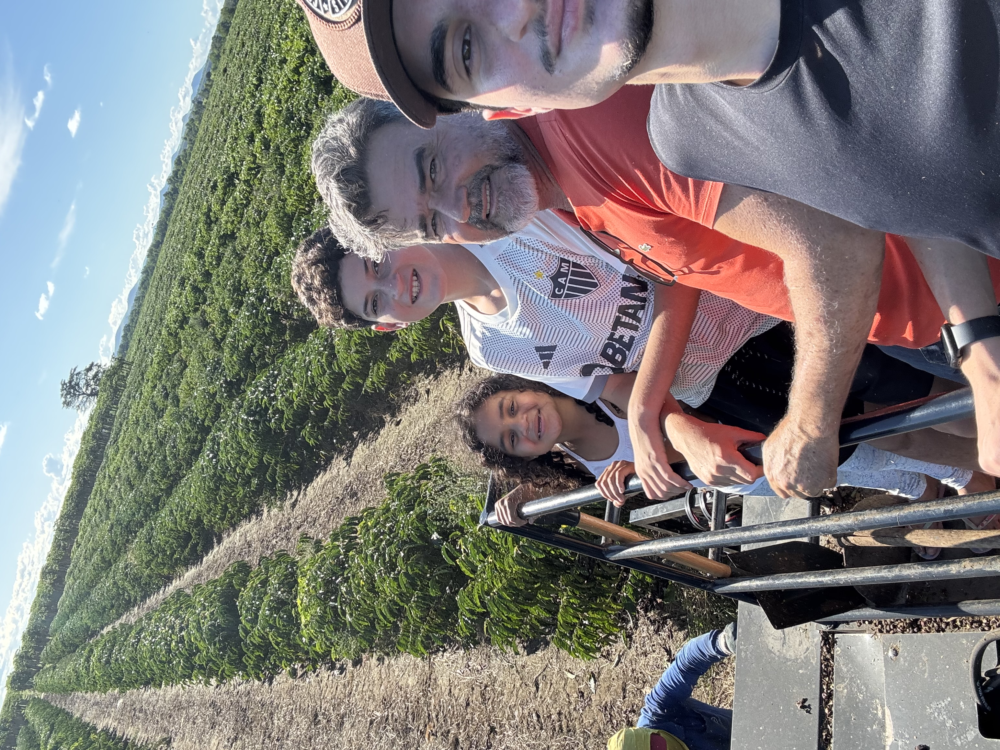

Gabriel Scarpat
Integrante do IBTECH
Quem sou eu?

Natural do interior da Bahia, me mudei para Belo Horizonte aos 14 anos em busca de melhores oportunidades de estudo e desenvolvimento pessoal. Atualmente, sou estudante universitário com interesse nas áreas de tecnologia, inovação e finanças.
Vim muito cedo e sem meus pais. Morei até a metade do meu primeiro ano com minha irmã mais velha e depois disso passei mais de um ano morando sozinho. Foi um período muito difícil, mas considero fundamental para meu amadurecimento. Aprendi a valorizar os pequenos atos e me tornei uma pessoa mais proativa.
Nesse período fiz amizades que tenho certeza que ficarão marcadas para a vida, fiquei mais próximo da minha família e ainda mais apaixonado pelo Cruzeiro.

Habilidades
Trabalho em equipe
Força dobrada quando o time está unido
Organização
Nenhuma missão sem um plano traçado
Aprendizado
Cada desafio é uma nova habilidade desbloqueada
Proatividade
Age antes que o problema vire chefe final
Programação em C
Dominando a linguagem das máquinas